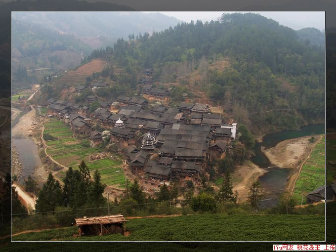

侗族村寨纪实游记摄影：

柳州到三江一路上全是新修的水泥路面，十分好走。中午时分，我们已经进入三江县城。一到三江，水泥公路就彻底与我们说拜拜了，好在到独峒的公路已经修好，虽然是沙石路，也算平整，并不难走。
车停在三江县城的一处野生鱼餐馆午餐，菜式很丰盛，记不清具体上了几盘菜了，但那道野生鱼火锅的确鲜嫩爽口、令人回味。价钱合理，120多元，也算超值。最可贵的是佤老的细心周到，趁我们点菜的间隙，他到附近的药店买了几片晕车药给映山红，从此根治了映山红晕车的毛病。

车在三江县城加满油后继续前进，一路上山随水转、水绕山流，青山绿水，景色迷人。也许是风景太美，我们竟然没有注意到一个小小的岔路口，而是直接就上了通往马胖鼓楼的道路。这条路上有许多侗族村寨，鼓楼、风雨桥、吊索桥、吊脚楼随处可见，多得看都看不过来。村寨里的居民对拿着长枪短炮的我们似乎司空见惯，见面是不是热情地打个招呼，就是微微一笑。在三团、八斗，我们忙得不亦乐乎，每见到一座鼓楼、一座风雨桥，大家都齐声惊叹。桃花、李花红白相间，把古老的侗寨辉映得更加卓约迷人。太多的风景都想把它装进镜头、带回家去。在八斗镇我们意识到走错路了，连忙倒车掉头，不过也不虚此行，因为看到了太多别处看不到的风景。车随山转，越上越高，最后整个车弥漫在浓浓的云雾之中，看来已经是到山顶了。刚下几步，云雾不见了，景物又变得清晰起来。但见层层迭迭的梯田茶园绽开新绿，远处田间间或露出红彤彤或者白灿灿的桃花李花，一派静谧的桃源景象。
路边一家三口正在采茶，两个女的穿着当地的民族服装，看样子是母女俩。我们停下车来，在与男主人聊天时，不时将镜头对准母女两人。男主人告诉我们，这里都是地地道道的高山惊蛰茶，刚刚采摘，有的只略为烘炒过，还没来得及放农药调味。佤老认为机会难得，劝我们各买一些。疯子大包大揽，到山顶上主人家中采购了五斤，花费六百大元。
车继续前进，在一个山口进入“侗族生态保护区”后，沿途越来越浓郁的侗族风情逐次展现到我们眼前。也许是刚才看到的风雨桥和侗族村寨太多，现在开始产生审美疲劳吧，我们基本上对这些梦寐以求的风景熟视无睹，一心只想着尽快赶到独峒。
独峒是个侗族小镇，位于湖南、贵州、广西三省交界处。去年的一场大火，将这个小镇三分之一的古老建筑化为灰烬。春节时就想到这里看看的，但得知被火烧过之后，我只好放弃了。后来一个朋友告诉我，侗族的生命力异常顽强，侗族村寨因为全是木质结构，常常会发生火灾，因此侗族村寨也常常处于重建之中。看古老的侗族建筑是一种风景，看重建中的侗族村寨更是一种不可多得的体验。基于这个原因，我们把今天的目的地选在了独峒。
一进独峒镇，一股贫瘠和荒凉感迎面扑来。街道既窄又乱，满是泥浆。我们只好将车停在镇政府的院子内，步行去找住宿的地方。找到一家小的私人旅馆，每人10元，应该是我近几年来住过的最便宜的房间。趁着老板娘为我们准备晚饭的空隙，几个人在镇上闲逛了一番。
独峒其实有两个侗寨，临河的一个叫独峒，靠山的叫牙寨。两个寨子基本连为一体，已经分不清谁是谁了。独峒几个月前被大火毁掉半个寨子，而牙寨却安然无恙。我们站在牙寨的风雨桥上，或者坐在其鼓楼下，随时都能感受到古朴和安祥。
鼓楼下几个小男孩子在练习吹芦笙，依依呀呀的难成曲调。我们就拿出糖果来鼓励他们，谁吹得好就奖励一包糖果。几个小朋友腼腆放不开，只有一两个小家伙大方地起劲吹起来。我们真的给了他们每人一包糖果，而此时其他的小朋友看见我们真给糖果，也一个个使劲吹起来。映山红则在旁边端起相机闪个不停。
旅馆的老板娘为我们做了一顿丰盛的晚餐，几个人就着当地特有的米酒大吃大喝起来。这里本来是湘、黔、桂三省的黄牛交易中心，牛肉自然是新鲜美味，老板娘也特意安排了牛肉火锅。
第二天早上大家在佤老的带领下登上了牙寨后面的一座高山，而佤老的女儿送给他的登山杖此时才派上了用场。站在山上俯瞰独峒，临时一边的房屋都在重建之中。这里建房比较奇特，都是先竖立几排木柱式的框架，再用木料将框架连起来，最后用木板分隔成墙壁和房间。我们看到，新竖立起来的框架上往往站满了前来帮忙的人，似蜘蛛侠一般。在侗族、苗族区域，一人有事全村帮忙已经形成传统。在后来的路上，我看见一群苗民背负沉重的化肥沿山路蜿蜒登山，很壮观的场面，原来是全村的人在帮一家从公路上把化肥运回山顶的家中。这里的地理环境决定了这一传统，任何人处于这一环境，不靠别人的帮助是很难生活下去的，而得到别人的帮助，你就必须先帮助别人，大家互相帮助才能共同生活下去。
下山后在镇小学旁边找了个小吃店继续以螺丝粉做早餐，边吃边看上学的小孩，看到上镜的还不忘给他或她来张特写。
回到小旅馆，老板娘按我们昨晚的指示已经找好了两个模特，一男一女，一老一少，身着民族服装等在店门口。当然，老的是男的，少的是女的。给他们的报酬是100元，但我估计大半部分会落入老板娘的口袋。
让两位模特随我们的车到离独峒5公里的巴团村。这里的风雨桥比较壮观，环境与独峒比起来也干净不少。在村里、河边、桥头，我指挥着他们摆POSS，而疯子和映山红则坐享其成，只顾着不停地按动快门。佤老可能对摄影兴趣不大，独自一个人跑到附近的另一个侗寨乱逛去了。
巴团风雨桥在众多的侗族风雨桥中应该是颇有名气的，它是唯一人畜分离的侗族风雨桥，人行道牲畜是不能走的，而人如果要从牲畜的道上走，估计牲畜们不会反对。在拍摄过程中，村里的很多人大约是认识两位模特吧，在得知我们的目的后，一位老大娘回家去拿了一个硕大的银项圈出来，让我们的模特少女戴在脖子上。我试了一试，沉甸甸的，大概有8斤重。
在与两位临时客串的模特合影留念之后，我给了车费让他们自行回家，而我们又将急匆匆地赶路，赶往下一个目的地--贵州黔东南从江县的芭沙苗寨。